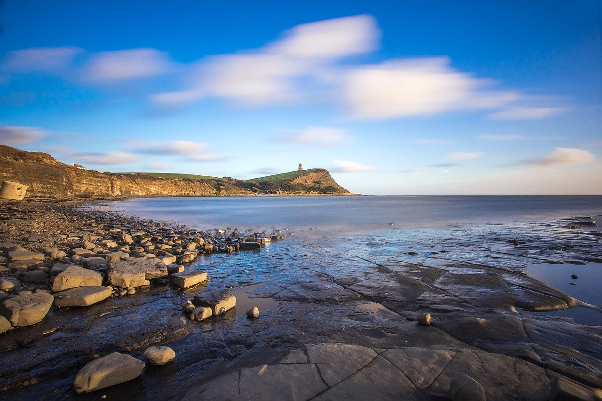

I am not exactly sure on how to start this one. Do i start with a joke or a quote or what exactly? I am out of thoughts for anything actually,
and its been this way for like the past 6 months since my latest project.
Moving on from such a big project and feeling like I really failed with it was kind of demotivating in way, it put me in a position where I wasn't
really sure if I wanted to continue making web pages or using javascript or any sort of anything that has to do with the web. I am not sure I feel like
I am just avoiding other programming languages in a sense that I am not fit to do proper game development or actually commit to a big project for once.
When I advertised donutroplis pretty much everywhere, it was to say the least quite THE disappointment. I went to every subreddit I could find
and I didn't get one single inch of attention even though I was so confident in this product being unique and being its own thing in a way, hell
I even got downvoted in some of the subreddits I tried sharing on. Looking back I think I was just trying to share a passion project in an environment
where everyone was sooo keen on selling something, everyone was just selling game ideas and prototypes so it was definitely tough to stand out in this sea
of stuff.
so yeah that not working out kind of put me down for a bit and I didn't really know where to go next cause I seemed to fail in every single thing I tried out
Look Above! Its Hope
Starting out this year, I guess I felt a weird surge of hope. I have been lost for quite a while not really knowing where to go
next or what type of project or passion project I should actually comit to this time. I felt like I was in this constant
loop of simply just making weird web stuff that never works out and is never really ground breaking in any shape or form.
although I had a lot of ideas I didn't really know how to actually act on them since I was always all over the place due
to how incosistent I am as a person. This time though, I gotta try something out new. I gotta get out of my comfort zone and actually
shoot for something new and weird cause I feel that is what defines me as a person. Just constantly changing and crashing around. Constantly
discovering wacky stuff that just peaks your interest. We are getting back up baby.
I have had a recent knack for discovering some nature scenery that just gives me a sense of relaxation and hope
Whats Next
I have been bumping A LOTTT lately in the past 6 months trying out different passions and trying to land something new.
First I tried actually doing 3D modelling. I bought this app called crocotile 3D and I messed around with it for like 3 hours?
and I guess I felt like I was learning something but then I just completely quit cause I felt like I could learn 3D modelling better
with blender and then I never touched blender lmfao. I guess I will get back to it at some point
I also tried going back to video editing and my god how things have changed, I legit FORGOT everything on how to edit and stuff and going back
to editing software felt like entering an airplane cockpit. There are so many buttons that just do different stuff and that definitely
overwhelmed the hell out of me so I am doing small and slow progress on that part but still trying things out with it.
At some point like a month or two ago, I wanted to make a simple platforming game; I knowwww, the typical platforming genre that has been done
thousands of times at this point but I really wanted to cook something up in that pico format. Its really special and I think It would help me
learn proper game development so that I can dip my toes into the experience and actually cook up proper projects but then I found out the pico
engine is like 15 or 20 bucks so that drove me away. I do actually still want to give this a shot but maybe in the Godot Game engine. Just create
a simple platforming game with a bunch of levels and some interactions. Looking back that sounds like a perfect start for game development, maybe I
should try that out

This looks pretty cool
What now
Now finally what am I doing now??? or what do I actually want to do right now?? so I have had this crazy idea for a pretty big project that I have always
wanted to make for ages. To simply put it, its going to be some sort of visual web experience. I know I just talked about not wanting to do web stuff anymore,
but this is going to be way less programming involved and more storytelling involved so I figured using something I am comfortable with to create something new
would be a good idea. So what type of story and what exactly will I be doing? Its really going to be like a weird of hybrid of things
so I am not really sure what it will be like but it will be definitely interesting to see work out.
I guess thats all I got to say for now. I will probably be diving back into the personal web and try to meet some people online who
might have the same interests with me so that I can actually try to get feedback on my work. Speaking of feedback WAITTT
FINAL THINGGG
although I said that I felt donutroplis was a failure, something weird happened. I actually managed to get a single user. They are real!!!
I was really surprised to find out that they found out about the project through github not even reddit, just straight github searching.
Why would someone search for games through gitub? I genuinely have no clue but its really dope.
They gave me some pretty good advice and I realised that although Donutroplis is a solid idea it had very obvious issues I do intend to fix.
The biggest issues were basically the intro page being very terrible cause I rushed it and the map being pretty stupid and tough to use, so I hope to fix
that at some point. That definitely gave me hope though
I chose the color yellow for this blog in the sense it gave this warm feeling of hope.